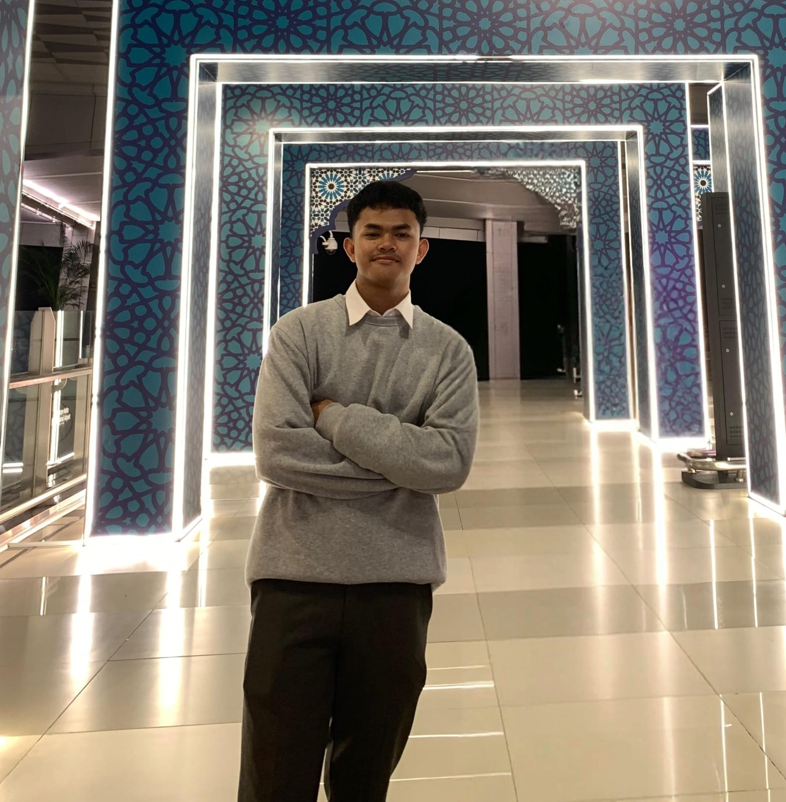

ABOUT ME
About
me.
A little story about the person behind the projects.

RPL
MAJOR
BDG
LOCATION
2024—27
EDUCATION
Sugi Alfin Permana
PROFILE
Halo, saya Sugi Alfin Permana, siswa jurusan Rekayasa Perangkat Lunak (RPL) di SMKN 1 Cipeundeuy. Saya tertarik pada teknologi dan senang mempelajari cara membuat pengalaman digital yang bermanfaat.
Fokus saya saat ini adalah pengembangan website dan desain UI/UX. Saya belajar menggunakan HTML, CSS, PHP, MySQL, Dart, dan Laravel, serta membuat rancangan antarmuka di Figma.
Melalui tugas sekolah, eksperimen, dan proyek pribadi, saya terus berlatih mengubah ide menjadi karya dan mengembangkan kemampuan saya selangkah demi selangkah.